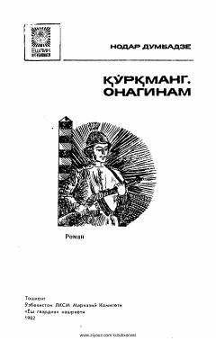

QOChegarachilarning matonatli va qiziqarli hayoti haqidagi ta'sirli roman.
Ushbu roman gruzin yozuvchisi Nodar Dumbadzening asari bo'lib, unda chegarachilarning kundalik hayoti, mashaqqatlari va sadoqati tasvirlanadi. Asar markazida yosh chegarachi Avtandil Jakeli va uning do'stlarining harbiy xizmatdagi qiziqarli hamda dramatik voqealari yoritilgan.